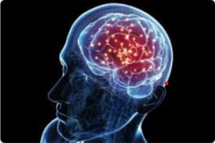
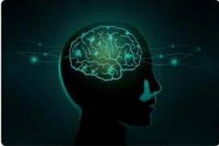
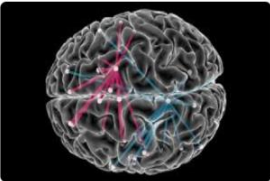
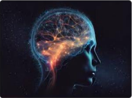
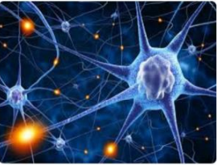
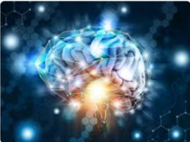
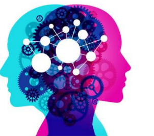
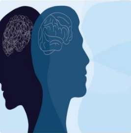

At its most basic, neuroscience is the study of the nervous system – from structure to function, development to degeneration, in health and in disease. It covers the whole nervous system, with a primary focus on the brain. Incredibly complex, our brains define who we are and what we do. They store our memories and allow us to learn from them. Our brain cells and their circuits create new thoughts, ideas and movements and reinforce old ones. Their individual connections (synapses) are responsible for a baby’s first steps and every record-breaking athletic performance, with each thought and movement requiring exquisitely precise timing and connections.
|  |  |  |
At its most basic, neuroscience is the study of the nervous system – from structure to function, development to degeneration, in health and in disease. It covers the whole nervous system, with a primary focus on the brain. Incredibly complex, our brains define who we are and what we do. They store our memories and allow us to learn from them. Our brain cells and their circuits create new thoughts, ideas and movements and reinforce old ones. Their individual connections (synapses) are responsible for a baby’s first steps and every record-breaking athletic performance, with each thought and movement requiring exquisitely precise timing and connections.
|  |  |  |
At its most basic, neuroscience is the study of the nervous system – from structure to function, development to degeneration, in health and in disease. It covers the whole nervous system, with a primary focus on the brain. Incredibly complex, our brains define who we are and what we do. They store our memories and allow us to learn from them. Our brain cells and their circuits create new thoughts, ideas and movements and reinforce old ones. Their individual connections (synapses) are responsible for a baby’s first steps and every record-breaking athletic performance, with each thought and movement requiring exquisitely precise timing and connections.
|  |  |
| Function | Description | importance |
|---|---|---|
| Cognition | The mental action of aquaring knowledge and understanding | Critical for decision-makig and problem-solving |
| Emotion Regulation | The ability to manage and respond to emotional experiences | Essential for mental helth and social interactions |
| Memory | The process of encoding, storing and retriving information | vital for learnig and adapting to new situations |
| Motor Control | The coordination of muscle movements | Necessary of pysical activity and coordination |
Kings Neuroscience also leads the world in pioneering imaging techniques – our researchers have access to facilities that can image from a single synapse to whole people. This neuroimaging supports our world-leading research as we investigate how our brains make us who we are.
Brain Conclusion
Summary of Braing functions and their importance